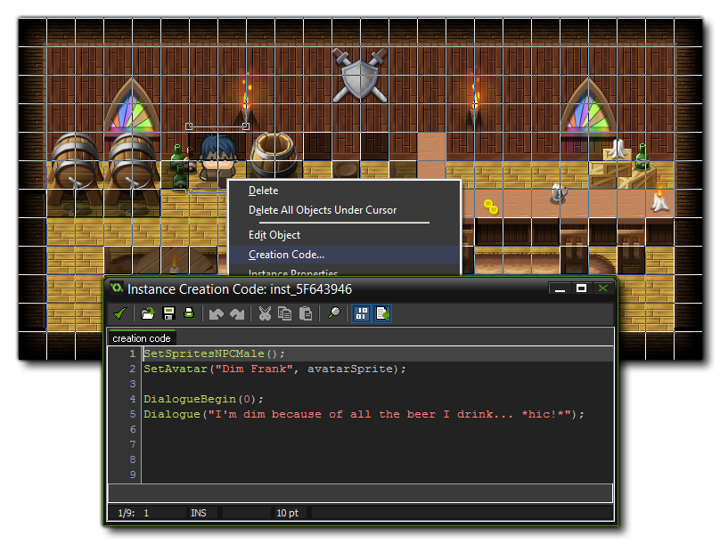
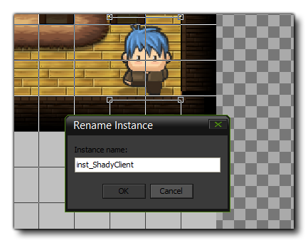
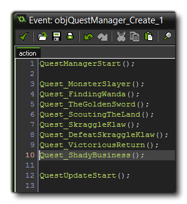

Once you have created a room using the YoYoGames RPG tilesets, you will want to populate the room with NPC's and interactive objects. If you have done the previous tutorial on
Creating an Area, then you should have a new tavern room for the player to enter from the main room rm_TownNew. In this tutorial, we are going
to add a tavern owner with an inventory to buy from, a regular NPC to chat with, a special NPC which will offer you a quest and a chest for the player to open.
Our first task in our new tavern is to add an NPC. This character does nothing but simply adds "colour" to the establishment and makes things look and feel a bit more alive. So, in the room editor, in the "Objects" tab, select the "obj_TestNPC" and place a copy in the room. This is our base NPC object and we need to give it some details now by using the instance creation code to customise it and give it a small piece of dialogue (place the instance in the room, then right-click it and open the creation code as shown below).  The scripts we call first define whether the NPC is male or female, then we give the NPC a name (a string) and a sprite to use as the avatar for conversations. In this case we simply set the default variable for the avatar as we don't require anything different for this NPC. next we create a dialogue for him so that when the player approaches and presses the action key there is a bit of text. The full code looks like this:
SetSpritesNPCMale();
SetAvatar("Dim Frank", avatarSprite);
DialogueBegin(0);
Dialogue("I'm dim because of all the beer I drink... *hic!*");
DialogueResponse(1, "Then don't drink!.");
DialogueResponse(2, "Somehow I doubt that...");
DialogueBegin(1);
Dialogue("Good *hic!* idea! After I finish this one... *hic!*");
DialogueBegin(2);
Dialogue("I'm not *hic!* dim? I'll have another one to celebrate... *hic!*");
Dialogue("");
Here we have a simple dialogue in which the player can repsond in one of two ways, with each response soliciting a different answer from the NPC. As we have not specified any further dialogues, after the last NPC
line, the dialogue will end. You can test the game now and you should be able to talk to this NPC.
It's time now to add an instance for the player to interact with, and in this case we are going to create a chest which will reward the player when opened. in this case, since it's a tavern we have created, we'll make
the chest give the player a healing potion. So, open the tavern room then in the Objects tab select Objects < Interactables < "objChest" and place it somewhere in the room.
By default the chest objects will drop nothing so we need to tell it what to drop. For that we need to open its creation code editor in the room and add the following code:
containsItem = true;
item = ItemGetLifePotion();
You tell the chest to spawn, then tell it what to spawn from the item sets scripts (you can invent more items by adding more scripts as explained previously in this manual), and this item will be placed directly into the player inventory. If you want to spawn multiple items, like gems for example, and you want them to appear on the ground, you would do this instead:
containsItem = true;
canDropOnGround = true;
item[ITEM_OBJECT]=objGreenGem;
item[ITEM_COUNT]=10;
Here we tell the chest that it contains items as before, but now also set the "canDropOnGround" variable to true to make sure the items are spawned around the chest and not in the player inventory. After
that we set the "item" array to point ot the green gem and we tell it to spawn 10 of them. In this way you can customise each chest to behave differently.
Adding a store character starts the same as adding an NPC. You place an instance of the "obj_TestNPC" in your room (behind the bar in this case) and then open its instance creation code. Here, as before, we set the sprite afor the avatar, and give the NPC a name. We also need to tell the NPC that they can't walk around or move, so we set a variable for that too.
SetAvatar("Tavernkeeper Tim", avatarSprite);
canMove = false;
Now we need to add the dialogue options. to start with we want to give the player the option to browse the store, or to leave, in which case we will have two options to make the player feel like the game world has a bit more freedom, even though the outcome will be the same. Remember that dialogues are defined in a linear manner to start with, with user responses being assigned an integer index value. So each response will lead to another dialogue which we will need to define too. So, we would have something like this to start the conversation:
DialogueBegin(0);
Dialogue("Welcome to The Tavern Of Tim! I don't just sell drinks, y'know!");
DialogueResponse(3, "You don't? Okay, show me your wares then, please.");
DialogueResponse(1, "Sell? You mean you don't give stuff away?");
DialogueResponse(2, "No thanks! I doubt you have anything I need right now.");
Here we have defined the start of the dialogue, and added three possible responses, with the first one taking us to the store, while the other two will simply finish the dialogue. The next task is to add in the responses, and we'll start with the two that close the dialogue:
DialogueBegin(1);
Dialogue("Nothing in life is free, y'know! And certainly not in The Tavern Of Tim...");
DialogueBegin(2);
Dialogue("Okay, but if you ever need a health potion or a trinket, I'm always here, y'know!");
The scripts will now run and after that dialogue line is shown the dialogue will end since we haven't added further lines or any responses. That just leaves the store itself to add, which we do with the following code:
DialogueBegin(3);
Dialogue("By all means, I have nothing to hide!");
DialogueItem(ItemGetLifePotion, 1);
DialogueItem(ItemGetLifePotion, 5);
DialogueItem(ItemGetRubbishSword, 1);
DialogueResponse(-1, "I think I've finished for today, thanks!");
As with all dialogues, we first define the text that the character speaks. After that we define the items that are to be shown in the inventory using the item sets scripts
to tell the store what to sell, and then a quantity of each. We then add a final dialogue, but this time a response (it will be shown after the store list) with an index value of -1. This means that the response will
spawn no further dialogue. We could if we wished change this to 0 for example and so the player would not exit the dialogue, but rather re-start it from dialogue 0, and so have the same choices presented again to
browse the store or leave.
Quests are structured exactly like dialogues and are just as easy to set up. In this example, we are going to add another NPC to the tavern, and if you talk to them they are going to tell you about a golden sword you
can find somewhere. You will then be able to go and get the sword and complete the quest or refuse and continue on your way.
So, add an NPC instance into the corner of your tavern room, then open the creation code and add the following:
SetSpritesNPCFemale();
SetAvatar("Slim Shady", avatarSprite);
canMove = false;
DialogueBegin(0);
Dialogue("Don't bother me I'm up to no good!");
DialogueResponse(1, "Sorry, didn't mean to disturb you.");
DialogueResponse(2, "Can I join in?");
DialogueBegin(1);
Dialogue("Then go away.");
DialogueBegin(2);
Dialogue("No. Go away.");
This is a simple dialogue and not part of the quest. We add it in to give some more life to the game and to have the character still be interactive even if no quest is available. The player will see this dialogue when the quest either can't be done yet (because the player doesn't meet the requisites) or the quest has been finished. You can close this code window now and then right-click on the instance to bring up the context menu. We need to change the instance name within the room of the instance to have our quest scripts work correctly, so click the option "Rename Instance" and call the instance "inst_ShadyClient".  The quest itself will be created in a script and added to our game via the Quest Manager. This means that all your quests can be scripted in parts and then referenced in that one object, making the whole process very easy to add to. So, create a new script in the Quests < Questlines folder and call it "Quest_ShadyBusiness". We will now start to define the quest with the following:
QuestNew("Shady Business", "Shady Business");
QuestGiver(instShadyClient);
This gives our current quest a name, as well as the name of the overall quest line that it forms a part of. In this case we use the same name as it's not part of a larger quest. We also define the quest giver, which is the instance name we gave for the NPC instance in the tavern room. Now we need to add the different contexts for each of the stages of the quest, starting with the Context.intro:
QuestDialogueContext(Context.intro);
QuestDialogueBegin(0);
QuestDialogue("What do you want? If you are looking for work I have some business for you...");
QuestDialogueAccept(1, 2, "That sounds intriguing, tell me more.", "That sounds a bit shady. No thanks!");
QuestDialogueBegin(1);
QuestDialogue("I lost a sword in town, but I can't leave this tavern or I'll be in trouble.");
QuestDialogue("So, I need you to go and get it for me. It's beside the chapel somewhere I'm sure.");
QuestDialogue("Now go. I need that sword.");
QuestDialogueBegin(2);
QuestDialogue("Go away then. Loser.");
This is the introduction to our quest. Here we first offer the player the quest and they have a choice of accepting or rejecting. The accepting text is quest dialogue 1 and the rejection text is dialogue 2. Now we need to set the Context.progress which is the text that will appear when the player has accepted the quest, but not yet completed it:
QuestDialogueContext(Context.progress);
QuestDialogueBegin(0);
QuestDialogue("Where's my sword?");
With that done, you will then have to add the Context.ending, which is the dialogue for when the player has completed the quest:
QuestDialogueContext(Context.ending);
QuestDialogueBegin(0);
QuestDialogue("Ha! You did it! Good work kid... You are now part of the Slim Shady gang.");
QuestDialogue("Oh, and keep the sword.");
The final thing we want to define are the quest conditions that have to met before the quest is complete. You can have as many of these as you wish, but for this small quest we just need to check that the item being requested is in the inventory of the player:
QuestCondition(CheckItemInventory, ItemGetGoldenSword());
Our small quest is almost complete! You can close the script now, and open the object "obj_QuestManager", then open the code block in the Create Event. At the end of the quest list, you need to add your new custom quest so it looks something like the image below:  One final thing to do is add an instance of the golden sword into the main "rmTownNew" beside the chapel so that the player can pick it up. If you look you'll see that there is already a chest there, so you can open that and remove the code from its room creation code and add the following:
containsItem = true;
item = ItemGetGoldenSword();
now you can test the game and see that your quest works correctly.